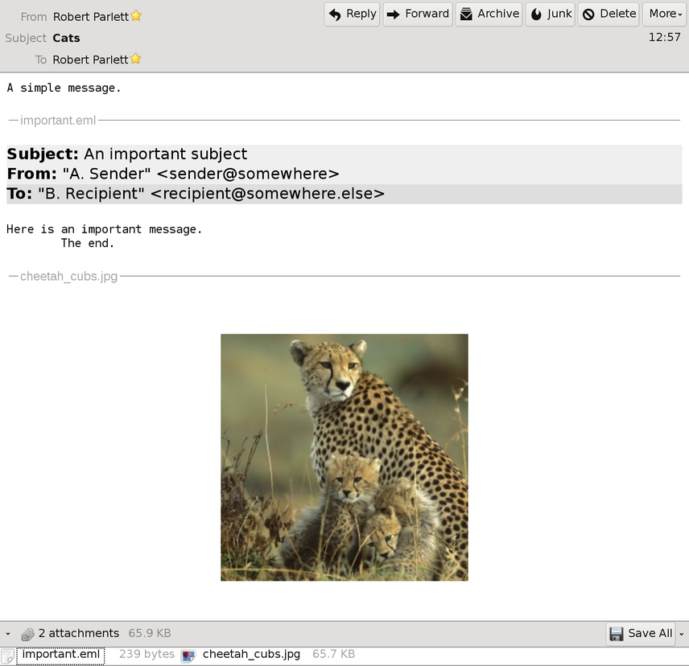

This page describes the classes in the mail package. These provide an API for handling emails and attachments, and for sending and receiving them via SMTP and POP servers respectively.
At the heart of the library is the mail.Message class. This represents either
The Message class comprises two basic parts :-
The headers can be set directly by providing a string key and a string value :-
m.set_header("From", "smith@xyz.com")where m is a Message instance. Note that the “:” is omitted from the key.
There can be several headers for each key. To add further ones (eg multiple recipients), use the add_header method, thus :-
m.set_header("To", "bloggs@acme.com")
...
m.add_header("To", "smith@xyz.com")
...
m.add_header("To", "jones@xyz.com")To retrieve all of the headers for a particular key, use get_headers :-
l := m.get_headers("To") # now l = ["bloggs@acme.com","smith@xyz.com","jones@xyz.com"]The only drawback with setting string values directly into headers is that it is easy to set nonsense values :-
m.set_header("Date", "32 Janvary 1891")(and it is also difficult to manipulate a valid date which is provided as a string).
For this reason, there are several methods which get and set header values, taking appropriate objects (as opposed to simple strings) as parameters and return values.
Several sorts of objects are involved :-
util.Time. Represents date/time values.mail.Address. A base class with two subclasses, Mailbox and Groupmail.Mailbox. Represents a single simple email address, eg “smith@xyz.com”mail.Group. Represents a named group of several Mailboxesmail.ContentType. Represents a Content type specification (eg “multipart/mixed; boundary=xyzQOIU980”)mail.ContentDisposition. Represents a Content-disposition specification.The Time object would be used with the get_date and set_date methods.
m := Message()
# Set a time 1 March, 2003 9:45:30am UTC
t := Time(2003, 3, 1, 9, 45, 30, Timezone.UTC_TIMEZONE)
m.set_date(t)
write(m.get_first_header("Date")) # "Sat, 1 Mar 2003 09:45:30 UTC"
t2 := m.get_date() # t and t2 are now different objects, but represent the same dateThe Mailbox class is mainly useful for parsing strings representing email addresses (mailboxes). The syntax available for valid addresses is surprisingly complex (see RFC822 for details, but all of the following are actually valid mailboxes.
":sysmail"@ Some-Group. Some-Org
Muhammed.(I am the greatest) Ali @(the)Vegas.WBAThe bits in brackets in the second example are actually comments, and are discarded by the parser.
Other than providing parsing, the Mailbox class also separates a mailbox into its constituent syntactic elements, which can be useful on occasion.
s := "\"Robert Parlett\" <r.parlett@(comment)somewhere.com>"
mb := Mailbox.parse(s) | ..parse error..
t := mb.to_rfc822() # Now t == "\"Robert Parlett\" <r.parlett@somewhere.com>"
write(mb.get_domain()) # "somewhere.com"
m := Message()
m.set_from(mb)
write(m.get_first_header("From")) # "Robert Parlett" <r.parlett@somewhere.com>
mbs := m.get_from() # Now mb and mbs[1] represent the same mailboxA Group is a named collection of several Mailboxes. Its syntax is defined in RFC822, but here are some examples :-
The Committee: Jones@Host.Net,
Smith@Other.Org,
Doe@Somewhere-Else;
Gourmets: Pompous Person <WhoZiWhatZit@Cordon-Bleu>,
Childs@WGBH.Boston, Galloping Gourmet@ANT.Down-Under (Australian National Television),
Cheapie@Discount-Liquors;
Cruisers: Port@Portugal, Jones@SEA;Any header that accepts an Address accepts a Group (Group is a subclass of Address). For example :-
s := "Cruisers: Port@Portugal, Jones@SEA;"
g := Group.parse(s) | .. parse error..
m := Message()
m.set_to(g)Message content is just a string and represents the raw content of the message. As such, according to RFC822, line breaks should be in CRLF form. For example :-
m := Message()
m.set_content("Here is a line\r\nHere is another line.")In fact, setting the raw content of the message is rarely the best approach. This is because the raw content is just one end of a three-stage “pipeline” transformation based on the Content-Type and Content-Transfer-Encoding header values. The three stages are :-
mail.Multipart object (see below)ContentType object which can be used to handle the content type in object form; alternatively the set_header method may be used. If a Content-Type other than the above four is used, then it just means that the decoded content must be set and retrieved directly, rather than via the content object methods (which will simply fail when called). +--------+ +--------+
| SMTP | | POP |
+--------+ +--------+
^ |
| |
| V
+------------------------+
| Message |
|------------------------|
| Headers | Various get/set methods
|------------------------|
| Raw Content | get_content(), set_content()
+------------------------+
^
| either "base64", or "quoted-printable",
Content-Transfer-Encoding "7bit", "8bit" or "binary"
|
V
+------------------------+
| Decoded Content | get_decoded_content(), set_decoded_content()
+------------------------+
^
| either "multipart/*", "text/*", "message/rfc822"
Content-Type or "application/octet-stream"
|
V
+------------------------+
| Content object | get_content_object(), set_content_object()
+------------------------+Here are some examples. Firstly, a message with quoted-printable encoding :-
m := Message().
set_content_transfer_encoding("quoted-printable").
set_content_object("The quick brown fox\tJumps over the lazy dog\n")Now m will have the value :-
object mail.Message#1(
content="The quick brown fox=09Jumps over the lazy dog\r\n"
headers=
object datastruct.SortTable#1(
"Content-Transfer-Encoding"->list#2881["quoted-printable"]
)
)and m.get_decoded_content() will be
"The quick brown fox\tJumps over the lazy dog\r\n"whilst m.get_content_object() will be
"The quick brown fox\tJumps over the lazy dog\n"Note how the data is different at each of the three levels. The raw content stored in the Message is in quoted-printable form, and thus escapes the tab character after the word “fox”. The decoded content has replaced “” with “”. This is the transformation applied by the (default) text/plain encoding. At the top level is the original data set with set_content_object().
As a second example, here is a Message which contains a gif file, in base64 encoding.
m := Message().
set_content_transfer_encoding("base64").
set_content_type(ContentType("image", "gif")).
set_decoded_content(img_data)Now m will have the value :-
object mail.Message#1(
content="R0lGODdhggHmAcIAADs7O7a2tqSkpJCQkHBwcPHx8dfX1xQUFCwAAAAAggHmAQAD/ki6DOTAsdGq\r\n
... many more lines ...
EYY13LvBJ0LI5c3chZMk07TI26JUcxhaKkC5Ua42lS783mfZ3nLeGIA5w0KbpXBsxNf0ChMTiLEu\r\n
HTUtkAAAOw==\r\n"
headers=
object datastruct.SortTable#1(
"Content-Transfer-Encoding"->list#3510["base64"]
"Content-Type"->list#3515["image/gif"]
)
)Note how in this case we use set_decoded_content() rather than set_content_object(); this is because we are not using one of the four Content-Types which allow object to decoded content transformation.
If we try to get the content object with :-
m.get_content_object()the call simply fails, setting &why appropriately.
Multipart messages are used to create messages with attachments. mail.Multipart is a very simple class which simply holds a list of Messages. The Multipart object is then set as the content object of a Message, together with a Content-Type such as “multipart/mixed”. An example is given below, which shows a multipart message being sent over SMTP.
The class mail.SmtpClient is used to send messages. It is a subclass of net.NetClient, which takes care of the lower-level networking. All that is required is to set the server, port and hostname (unless the defaults suffice), to open the connection and to send the message.
The following example creates a multipart message, and sends it using an SmtpClient.
import mail, io
$load CHEETAH "cheetah_cubs.jpg"
procedure send(m)
local t
#
# Send the message m using SMTP. You may need to customize the object t to change the defaults :
# set_server(x) - the SMTP server to use (default "localhost")
# set_port(n) - the port to use (default 25)
# set_hostname(x) - the hostname to use with the EHLO command (default &host).
#
t := SmtpClient().
open().
send_message(m).
close() | stop(&why)
end
procedure main()
local mp, m, fwd
# A Multipart object to build a multipart message; the preamble
# will be seen by non-MIME mail clients.
mp := Multipart().
set_preamble("This a MIME message.")
# The first part of the multipart message; a simple text message.
m := Message().
set_content_type(ContentType("text", "plain").set_parameter("charset", "utf-8")).
set_content_disposition(ContentDisposition("inline")).
set_content_transfer_encoding("7bit").
set_content_object("A simple message.")
mp.add_part(m)
# This message is an email to be forwarded as the second part of the multipart.
fwd := Message().
set_content_type(ContentType("text", "plain").set_parameter("charset", "utf-8")).
set_content_transfer_encoding("quoted-printable").
set_from(Mailbox.parse("\"A. Sender\" <sender@somewhere>")).
set_to(Mailbox.parse("\"B. Recipient\" <recipient@somewhere.else>")).
set_subject("An important subject").
set_content_object("Here is an important message.\n\tThe end.")
# The second part of the multipart. We use a Content-Type of message/rfc822 and set
# the message to be forwarded as the content object.
m := Message().
set_content_type(ContentType("message", "rfc822")).
set_content_disposition(ContentDisposition("attachment").set_filename("important.eml")).
set_content_transfer_encoding("7bit").
set_content_object(fwd)
mp.add_part(m)
# The third part of the multipart is another attachment, a base64-encoded jpeg.
m := Message().
set_content_transfer_encoding("base64").
set_content_type(ContentType("image", "jpeg")).
set_content_disposition(ContentDisposition("attachment").set_filename("cheetah_cubs.jpg")).
set_decoded_content(CHEETAH)
mp.add_part(m)
# Now create the top-level message of Content-Type multipart/mixed,
# and set the Multipart object as the content object.
#
# You will of course need to edit the from and to headers!
#
m := Message().
set_from(Mailbox.parse("\"Robert Parlett\" <rparlett@localhost>")).
set_to(Mailbox.parse("\"Robert Parlett\" <rparlett@localhost>")).
set_content_type(ContentType("multipart", "mixed")).
set_content_object(mp).
set_subject("Cats")
# ... and send this message.
send(m)
write("OK")
end
The resulting message looks like this when viewed in Thunderbird :-

mail.PopClient is a very simple class for retrieving messages using the POP mail protocol. Here is a simple example :-
import mail, io, net, lang
procedure main(a)
local p, m, t, id
(*a = 2) | stop("Usage: poplist username password")
#
# Create a client. You may need to customize p to change the defaults :
# set_server(x) - the POP server to use (default "localhost")
# set_port(n) - the port to use (default 110)
#
p := PopClient().
set_auth(Authentication(a[1], a[2]))
p.open().login() | stop("Failed to connect/login: ", &why)
t := p.stat() | stop("Failed to stat messages: ", &why)
write("Stat OK: ", to_string(t))
t := p.uidl() | stop("Failed to uidl messages: ", &why)
write("UIDL OK: ", to_string(t))
t := p.list() | stop("Failed to list messages: ", &why)
write("List OK: ", to_string(t))
if *t > 0 then {
id := t[1].number
m := p.retr(id) | stop("Failed to retrieve message: ", &why)
write("Got a message OK: ", image(m))
}
p.close()
end
Example output in this case, after sending the multipart attachment in the previous example might be :-
List OK: table#2{1->93292}
Got a message OK: object mail.Message#1(2)